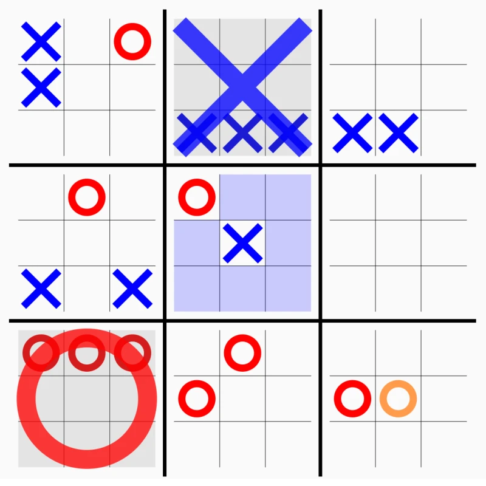

Ultimate tic-tac-toe takes a game that's been solved since childhood and makes it hard. The board is a 3x3 grid of smaller tic-tac-toe boards, and you win by claiming three sub-boards in a row. The twist is that the cell you play in decides which sub-board your opponent must play in next. Pick the top-right cell of any sub-board and your opponent is sent to the top-right sub-board. Every move has consequences two layers deep.

{kind=link}
When you're sent to a sub-board that's already won or full, you get a free choice of any open sub-board. That's usually bad for the person who sent you there. A lot of the game is about not handing out free choices.
The search
Ordinary tic-tac-toe has 255,168 possible games and you can enumerate them in a blink. The ultimate version has at most \(3^{81}\) board configurations, about \(4 \times 10^{38}\), and the branching factor swings from 9 in a forced position to the low dozens when you have free choice, so I use depth-limited minimax with alpha-beta pruning and a time budget instead. The search is iterative deepening. It searches to depth 1, then 2, and so on up to a cap of 20, and stops starting new iterations once half of a 1.5 second budget is gone. If an iteration runs past the full budget it's abandoned and the move from the last completed depth is used. The best move from each iteration goes to the front of the move list for the next one, which is what makes the pruning effective. How deep it gets depends on the position and the machine, and I haven't measured it carefully.
Move ordering scores each candidate before the search looks at it. Centre cells and centre boards score higher, a move that wins a sub-board gets a 1,000-point bonus, and a move that sends the opponent to a board where they can win immediately loses 200. There's also a 50-point bonus for sending the opponent to a won or full board, which gives them free choice. That's the opposite of the advice two paragraphs up. The ordering only affects which moves are searched first, so the search can still reject the move, but it's a bug.
The evaluation
At the depth limit each position gets a score from the searching side's point of view. A won game is plus or minus 100,000. Otherwise I look at the eight lines through the 3x3 meta-board. Each sub-board a player has won along a line is worth 40 times a positional weight (5 for the centre board, 3 for corners, 2 for edges), and the line as a whole is worth 800 if one player holds two boards on it and the other holds none, or 60 for one board unopposed. A line with boards from both players is dead and scores nothing. Sub-boards still in play add a smaller score of their own, 12 for two in a row and 2 for one, scaled by the same positional weight, plus 30 per sub-board where the player is one move from winning along an unblocked meta-line. Finally, a routing term of 300 rewards forcing the opponent into a sub-board where you already have a winning move waiting, and penalizes being forced into one where they do.
The weights are hand-tuned. It's beatable, but it doesn't make obvious mistakes, it punishes a careless free choice, and it will give up a sub-board to set up a meta-line.
Rust to WebAssembly
The search and evaluation are about 680 lines of Rust compiled to WebAssembly with wasm-bindgen, and the front end is plain JavaScript. Each call passes the full board state across with Serde and gets a move back, so the Rust side holds no state between moves and the JavaScript side owns the game. There are no tests. The move-ordering bug above is the kind of thing one would have caught.